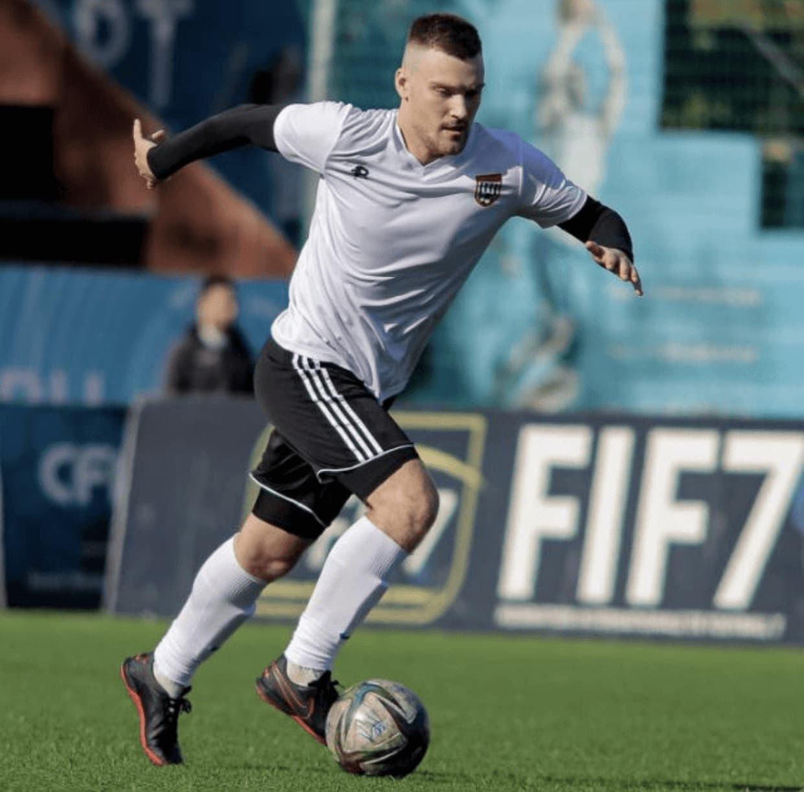
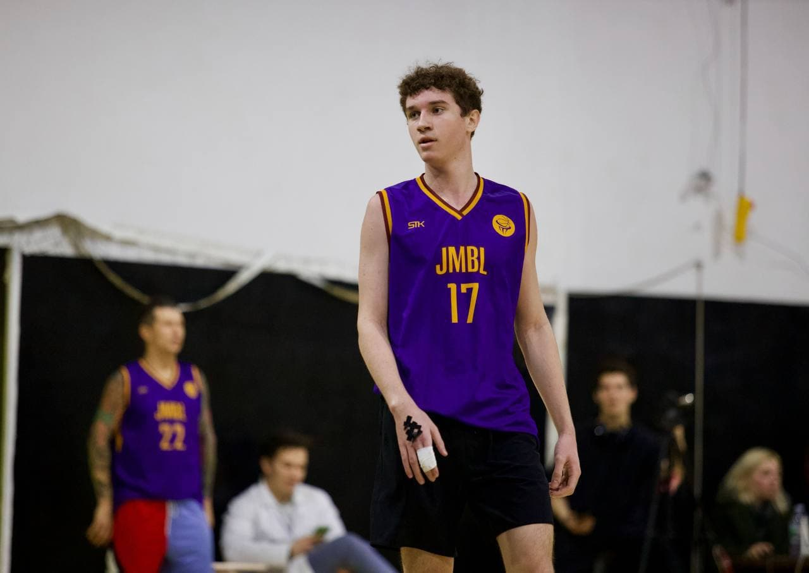
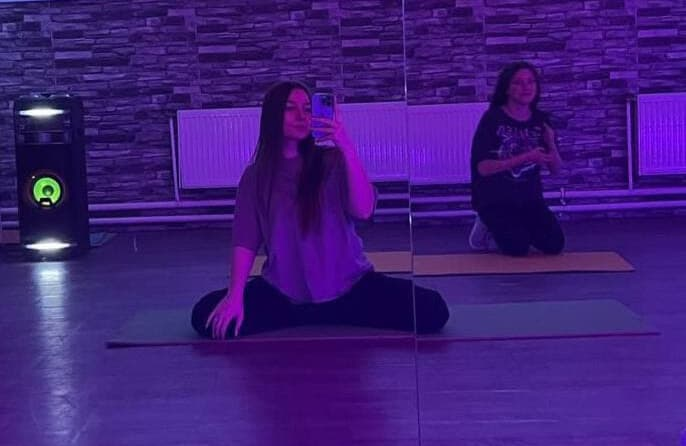
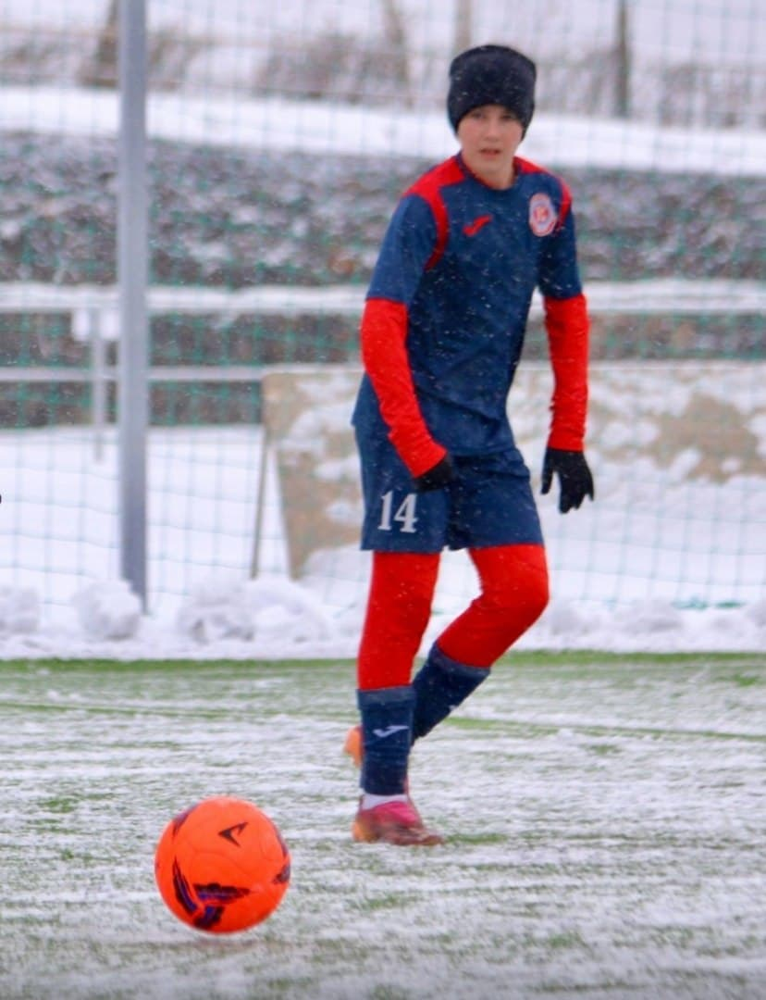

Спортивные истории
-
 24 года
24 годаВиолетта Мишина
Московская область, ПодольскМне всегда нравились различные виды спорта, но сегодня я расскажу о своей любви к боксу. Будучи еще студенткой, после просмотров боев по ММА я решила, что тоже так хочу. Но для начала я решила, что пойду на классические занятия по боксу, а уже после на смешанные единоборства. Родители были настроены негативно, но спустя некоторое время усердных занятий я начала показывать результаты, полюбила бокс, передумала идти на занятия по ММА и даже начала участвовать в соревнованиях. Вскоре я вышла замуж и забеременела. Занятия пришлось прекратить, да и муж особо не одобрял мою любовь к боксу. После рождения малышки, уже в декрете, я снова вернулась к любимому делу, и никто не стал препятствовать моему решению. Сейчас я вернулась в прежнюю форму и уже снова готовлюсь к соревнованиям. Желаю подписчикам никогда не сомневаться в своих силах, ведь это качество главное не только в спорте, но и в жизни.
-
 19 лет
19 летКонстантин Свирин
Тульская область, ТулаС детства люблю футбол. Хожу и смотрю футбол везде. Я занимаюсь футболом уже несколько лет и поиграл во многих командах. Я видел много талантливых ребят, которые сейчас играют в серьезных футбольных академиях России. С некоторыми я играл за одну команду. Из-за проблем со здоровьем я решил не идти в профессиональный спорт. На данный момент я также продолжаю заниматься футболом. Тренировки у нас практически каждый день. Мы играем с командой на разных турнирах в области и столице. Каждый раз я получаю невероятное удовольствие от игрового процесса и новых побед.
-
26 лет
Сергей Мишин
Московская область, ПодольскС самого детства я занимаюсь футболом. Закончил школу футбола в 10 классе. Профессиональную карьеру построить не получилось, но я понимал, что не могу не заниматься любимым делом. Поэтому я ушел в любительский лигу. На данный момент моя команда находится на 2 строчке турнирной таблице. Два раза в неделю у нас тренировки. Мы готовимся в следующему сезону. Благодаря футболу я обрел силы и выносливость, мотивацию и любимое занятие. Я верю, что каждый человек может найти вид спорта, который будет любить всей душой.
-
 18 лет
18 летАртем Куликовский
Омская область, ОмскПрофессиональный спортсмен, хоккеист. Занимаюсь хоккеем с 4 лет. Начинал в Петрозаводске, затем в 13 лет приехал играть в Подольск в более сильную хоккейную команду. Спустя два года поступило предложение играть в системе Омского Авангарда, которое я, соответственно, принял. В 2021 и 2022 годах я становился чемпионом России в составе юниорских команд до 17 лет. С 2021 года выступаю за молодёжную хоккейную команду «Омские Ястребы », в составе которой становился бронзовым и серебряным призером Молодёжной Хоккейной лиги. Также я вызывался в юношеские сборные команды России U16 и U17. На протяжении всего времени поддерживаю здоровый образ жизни: алкоголь и табак не употребляю.
-
 26 лет
26 летАртём Ущербов
Московская область, ПодольскМое главное увлечение — это футбол. Занимаюсь им с 6 лет. На футбол меня привел отец. С первых тренировок я понял, что мне это очень интересно. Около моего дома располагается легендарный стадион Зенит, и, в принципе, все свое детство я провел на нем. Думаю, футбол сыграл ключевую роль в формировании меня как человека и не дал пойти по кривой дороге заниматься всякими глупостями! На данный момент продолжаю заниматься футболом, чтобы держать форму.
-
19 лет
Анастасия Лунина
Московская область, КлимовскВ подростковом возрасте я профессионально занималась плаванием, очень любила спорт, но несколько лет назад получила травму и не смогла больше заниматься на высоком уровне и бросила спорт вообще. Буквально недавно я узнала о проекте «Спорт Медиа» и после просмотра интервью с разными спортсменами, где рассказывали о мотивации, я воодушевилась, и мне захотелось вернуться в спорт. Я начала бегать по утрам, правильно питаться и даже записалась на секцию по фитнесу. Спасибо вам за полезные советы и что помогли вернуться в спорт!
-
19 лет
Владислав Дуловский
Московская область, ПодольскВсегда любил и интересовался спортом. В детстве я длительное время занимался баскетболом, но из-за проблем со здоровьем пришлось оставить спорт. После небольшой паузы я решил попробовать себя в новом амплуа и начал заниматься плаванием. Я с удовольствием посещал тренировки, показывал хорошие результаты, но параллельная учеба отнимала очень много времени и не позволяла уделять спорту необходимое время. В итоге пришлось закончить с плаванием. Спустя время я узнал о проекте «Спорт Медиа» и посмотрел много сюжетов о спортсменах и о том, как они строили свою карьеру. Во мне проснулась огромная мотивация вернуться в спорт. Я записался в спортзал и теперь с удовольствием в свободное время хожу на тренировки.
-
 19 лет
19 летВладислав Прокопов
Казахстан, КостанайВ Казахстане я долго занимался волейболом. Мне с детства нравился этот вид спорта. У меня была крутая команда из ребят моего возраста и чуть старше. Мы играли против других городов и регионов на больших площадках. Во взрослом возрасте у меня начались проблемы с легкими, поэтому мне пришлось меньше уделять времени спорту, а впоследствии вообще оставить его на втором плане из-за учебы. Недавно мне друг рассказал, что узнал о проекте «Спорт Медиа» который выпускает крутые интервью со звездами спорта и снимает репортажи с соревнований. Я посмотрел абсолютно все сюжеты и очень вдохновился работой авторов. На следующий день я предложил своим друзьям собраться на площадке и поиграть в волейбол, как в старые добрые времена. Надеюсь, это станет нашей новой и хорошей традицией.
-
 19 лет
19 летЕфремова Софья
Республика Саха, ЯкутскВсегда любила физическую активность. Мне нравится играть в подвижные спортивные игры, например, волейбол или теннис. Я много лет занималась танцами, участвовала и побеждала в конкурсах. Со мной занималось много талантливых девочек, с которыми я общаюсь по сей день. Мы с теплотой вспоминаем наши яркие победы и не менее горькие поражения. Сейчас у меня началась учеба в университете, и я уже не могу уделять танцам столько времени. Вместо танцев я решила пойти в спортзал, чтобы поддерживать себя в форме.
-
 19 лет
19 летАркадий Осипов
Омская область, ОмскС детства занимался каратэ. Участвовал и побеждал на соревнованиях. Всегда любил спорт и с удовольствием им занимался. Когда мне было 15 лет, я получил серьезную травму плеча и не смог продолжить заниматься любимым делом. Из-за параллельной учебы и долгого восстановления я не мог заново начать заниматься. Пару месяцев назад я узнал о проекте «Спорт Медиа». Меня заинтересовали сюжеты и интервью, которые проводили авторы проекта. Было очень интересно послушать именитых спортсменов и то, какой путь они прошли. Меня это так мотивировало, что сподвигло на запись в спортзал недалеко от дома. Теперь я регулярно занимаюсь в спортзале, безопасно для здоровья и не в ущерб учебе.
-
18 лет
Метэ Чалышкан
Турция, БодрумВ детстве всегда мечтал стать баскетболистом. Много и упорно тренировался с ранних лет и кучу сил отдал в этот вид спорта. Но в один момент мне просто перестало это нравится. Баскетбол больше не приносил мне удовольствия, и я был близок к тому, чтобы оставить свою мечту и все забросить. Тут на помощь мне пришел проект «Спорт Медиа». Он восстановил мою мотивацию и помог с новыми силами начать играть в баскетбол.
-
 27 лет
27 летДарья Мустафаева
Московская область, ПодольскЗа всю свою жизнь я никогда не занималась никаким видом спорта. Было неинтересно, да и особых талантов и навыков у меня не было. Но в прошлом году я поняла, что меня не устраивает моя форма после двух лет работы в удаленном формате . Поэтому я решила что-то менять и начала заниматься фитнесом. Больших надежд, что спорт плотно вольется в мою жизнь, у меня не было. Но все оказалось наоборот. Медленно, но верно спорт стал неотъемлемой частью моей жизни. Я хожу на тренировки три раза в неделю, придерживаюсь правильного питания. По утрам перед работой я совмещаю приятное с полезным: гуляю с собакой и бегаю. Сейчас я уверена, что не сдамся и буду продолжать в том же духе!
-
 25 лет
25 летТимофей Кикош
Московская область, ПодольскУвлекаюсь футболом с раннего детства. Воспитанник Детской Юношеской Спортивной Школы Дюсш «витязь» г. Подольск. После окончания спортивной школы был приглашен в молодежную команду профессионального клуба «витязь» г. Подольск, где играл в 3 дивизионе чемпионата России по футболу. Отыграв в команде 2 года, перешел в молодежную команду «подолье» г. о. Подольск, где также продолжил свое участие в 3 дивизионе чемпионата России по футболу. После окончания университета, к сожалению для профессионального роста, пошел работать по специальности, и о профессиональном спорте пришлось забыть. Но про футбол я не забывал ни на день. На данный момент принимаю участие в любительских турнирах в Подольской Федерации Футбола (ПФФ) и Лфл по городу Москва.
-
 18 лет
18 летЕкатерина Файзуллина
Московская область, ПодольскМне 18 лет. На протяжении 5 лет я профессионально занималась волейболом, имею 2 взрослый разряд. Много раз ездила на соревнования, среди них были товарищеские, областные, региональные, городские матчи. Также с 8 класса принимала участие в соревнованиях между школами города Подольск, где мы всегда занимали 1-2 места. К сожалению, по состоянию здоровья я была вынуждена бросить этот спорт. Совсем недавно я узнала о проекте Спорт-медиа, и теперь я соблюдаю здоровый образ жизни, правильное питание и занимаюсь спортом дома для общего укрепления здоровья!
-
18 лет
Вероника Мосягина
Московская область, ПодольскВ 8 лет родители отвели меня на легкую атлетику. Так начался мой путь в спорте. Я занималась этим видом спорта до 16 лет, а потом у меня начались экзамены в школе, поступление в колледж и спорт совсем ушел из моей жизни. Недавно я узнала о проекте Спорт Медиа от знакомого, подписалась на Телеграмм канал и группу ВКонтакте. Интервью со спортсменами навеяли на меня ностальгию о моем спортивном прошлом, об атмосфере тренировок и соревнований. Мне захотелось снова начать заниматься спортом. Было сложно преодолеть лень. Но увидев пост в группе ВКонтакте от Спорт Медиа, где была подборка простых упражнений для людей с сидячим образом жизни, я решила повторить этот небольшой комплекс. По возвращении спорта в мою жизнь общее самочувствие и настроение стало улучшаться. Сейчас я регулярно посещаю тренажерный зал, групповые тренировки по растяжке. Еще мой интерес к спорту заметила моя подруга. Я переслала ей одно интервью со спортсменом из телеграмма Спорт Медиа, и она тоже вдохновилась. Теперь мы ходим в зал вместе. Спасибо Спорт Медиа за мотивацию и толчок к здоровому образу жизни!
-
 19 лет
19 летАнна Шувалова
Московская область, ЕгорьевскВыдержанный человек, устойчивый не только к интенсивным физическим нагрузкам, но и морально. Занималась боксом, смешанными единоборствами (ММА), конным спортом. Распространённый миф о влиянии единоборств на женскую фигуру, то, что нагрузка данных видов спорта делает из утонченной фигуры мужественную. Бокс — хорошее кардио и силовая нагрузка. Он хорошо прорисовывает мышцы на всем теле. Помимо физических преимуществ, от занятия боксом вы получите дисциплину, концентрацию, реакцию, умение стоять на своем, уважение к другим.
-
21 год
Вероника Березина
Московская область, ПодольскЛюблю активный образ жизни. Являюсь тренером спортивного коллектива по черлидингу и современной хореографии. Помимо активной работы, занимаюсь бегом и аэробикой. Попробовала себя в разных направлениях, такие как: тренер по спортивной гимнастике и танцам.
-
 27 лет
27 летВладислав Масленко
Московская область, ПодольскНачал заниматься спортом с 4 лет. Родители отдали на футбол. Затем закончил школу футбола. После выпуска играл в любительской лиге. Вскоре была травма колена. Пробовал заниматься дома, чтобы не терять форму. Как только врачи разрешили играть, сразу вернулся на поле, но уже не в качестве игрока, а качестве судьи. Отучился на футбольного арбитра. О проекте «спорт Медиа» рассказали друзья. Мне тоже захотелось стать частью проекта.
-
31 год
Евгения Корнеева
Московская область, ПодольскС детства увлекаюсь творчеством (музыка,танцы,вокал), люблю читать и активно проводить время. После рождения второго ребенка решила привести свое тело в форму и начала знакомиться с миром фитнеса в домашних условиях. С того момента физическая нагрузка стала неотъемлемой частью моей жизни. И, конечно,мои дети тоже с огромным удовольствием занимаются спортом со мной.
Вот так желание похудеть после родов привело к регулярным тренировкам,которые воспринимаются не как мучение,а как источник энергии и удовольствия.
-
 19 лет
19 летАлена Драникова
Краснодарский край, КурганинскС самого детства я занимаюсь творчеством. В спорт пришла совсем недавно, но за 2,5 года это увлечение стало ритуалом и энергией дня. Каждое утро выхожу на пробежку, обычно бегаю 3-5 км, занимаюсь йогой и получаю заряд солнечных лучей, потому что живу в теплом городе. Пару месяцев назад мои подруги присоединились ко мне, и мы вместе бегаем по утрам и ходим в спортзал. От друзей узнала о проекте «Спорт Медиа» и захотелось рассказать о себе. Также хочу отметить, что заниматься спортом никогда не поздно.
-
19 лет
Наташа Григорьева
МоскваКогда в 2020 году был карантин, я начала бегать у себя во дворе частного дома. Дистанция была небольшая — от дома до сарая. Однако я всё равно полюбила это занятие. Когда сняли ограничения, я бегала по паркам в своем городе, узнавала правильную технику бега. Бег привил мне спортивный образ жизни. Следом я подключила правильное питание. Теперь я хожу в спортзал и продолжаю выходить на новые уровни в спорте.
-
19 лет
Даниил Петров
Эстония, ТаллинСтрасть к хоккею появилась у меня еще в далеком 2010 году, когда мой дядя (хоккеист) привёл меня в первый раз на каток. В тот день у меня загорелись глаза, и во мне проснулся неистовое желание заниматься данным видом спорта. Мне купили всю экипировку, и я пошел на свою первую тренировку. С того самого дня у меня до сих пор остались друзья, с которыми мы объездили много стран, вместе выигрывали и проигрывали, с которыми мы добивались больших успехов и с которыми мы опускались на самое дно. Так как в Эстонии хоккей не очень развит, приходилось ездить каждые выходные в Финляндию. Паром с Эстонии выходил в 5 часов утра, а приходил в 12 часов ночи. Вдобавок к этому тренировки, дополнительные занятие и т. д. В конце концов, мой организм не выдержал, и мне пришлось покинуть профессиональный хоккей. За свои 10 лет я успел поиграть в 3 клубах, а также выступить за сборную. После 3 лет отсутствия хоккея в моей жизни я всё-таки наплевал на слова врачей и вернулся в хоккей, хоть и в любительский. Хоккей — это очень интересный, но сложный и травмоопасный спорт. Травмоопасность данного спорта я проверил и на себе: выбитые зубы, переломы, швы. Но я ни грамма не жалею, что выбрал именно этот спорт.
-
19 лет
Савва Азаров
Финляндия, ХельсинкиС малых лет родители привили мне любовь к хоккею. В детстве я решил заниматься профессиональным хоккеем. Я упорно тренировался и горел желанием построить карьеру в этом виде спорта. Когда я вырос, меня пригласили в команду «Harjun Kiekko» из округа города Хельсинки. Я подписал контракт и получал огромное от удовольствия от каждой игры. У нас был отличный коллектив, мы очень успешно выступали в мировых турнирах. Но все хорошее тоже заканчивается. Мне пришлось покинуть команду из-за начала студенческой жизни. Хоть хоккей и не пропал из моей жизни, я мечтаю о тех временах. Сегодня я со своими друзьями из Хельсинки, Вантаа и Эспо собираемся на ледовых площадках и потрясающе проводим время с клюшками в руках, гоняясь за нашей любимой шайбой.
-
20 лет
Ангелина Сопруненко
МоскваМне очень нравиться заниматься спортом. Пусть я никогда не выступала на профессиональной арене, мне нравится развивать свои физические показатели в разных видах спорта. В школьные годы я очень хорошо сдала нормативы ГТО. Это было нелегко, но моя физическая подготовка показала, на что способна. Еще я часто играю в спортивные игры со своими друзьями, например, волейбол или теннис. Иногда я занимаюсь в спортивном зале, могу потягать железки или проверить свои возможности в кардио-нагрузках. В общем, спорт — неотъемлемая часть моей жизни.
-
19 лет
Филипп Дуловский
Московская область, ПодольскМое знакомство со спортом началось в 7 лет с секции по баскетболу, плаванию, футболу. Тогда я просто пробовал себя во всем и пытался найти, что мне будет больше по душе. После нескольких лет поисков, не найдя ничего интересующего меня, я закончил свои занятия спортом. Не тренировался и не занимался какими либо серьезными физическими нагрузками вплоть до 16 лет, когда состояние моего тела стало далеко не лучшим, и я решил, что надо это исправлять. Начав заниматься дома, со своим весом, я смог привести себя в порядок до приемлемого уровня. После меня заинтересовал вид спорта, связанный с гирями. Примерно 4 месяцев я занимался с гирями разных весов, дойдя до внушительных результатов. После этого мне опять захотелось внести еще больше разнообразия в свою спортивную жизнь. Я возобновил баскетбольные тренировки и купил абонемент в спорт зал. И вот уже как 2 год я посещаю спортивный зал и комбинирую его посещение с баскетбольными тренировками. Пройдя довольно большой путь к спортивной жизни, с каждой новой тренировкой я все больше влюбляюсь в спорт и уже слабо представляю свою жизнь без него.
-
 19 лет
19 летВиктория Лыкова
Московская область, ПодольскС самого детства меня увлекало плавание, я любила наблюдать за спортивными соревнованиями, любила смотреть как обычные люди плавают в море или реке. В детстве родители научили меня плавать, но всё же боязнь воды и неуверенность до конца я побороть не смогла. Но любовь к воде и плаванию у меня была всегда. И вот несколько лет назад я узнала о таком виде спорта, как сапсёрфинг. Впервые попробовала его на отдыхе, меня это очень увлекло и самое главное, находясь на сапе я не боялась воды. По возвращении в Москву я продолжила занятия сапсёрфингом. И вот и по нынешний день занимаюсь этим увлекательным видом спорта.
-
 19 лет
19 летВладислав Спицын
Московская область, МытищиЗаниматься спортом я начал в 7 лет. Бабушка привела меня в футбольную секцию, но я там занимался только 1 год. В 12 лет учитель физкультуры предложил мне пойти в школьную секцию по баскетболу. С первого занятия у меня всё получалось, и через месяц меня перевели в старшую группу. Через год я попал в местную спортшколу, был там одним из лучших. В 15 лет я переехал в Мытищи и и решил попасть в школу олимпийского резерва. Мне очень повезло, что меня взяли, поскольку я не дотягивал до уровня ребят. Через пару лет я влился, стал больше получать игрового времени, и за 3 года я стал двукратным чемпионом Московской области и по одному раз стал серебряным и бронзовым призёром. В 2022 году мне присвоили 1 взрослый разряд по баскетболу. После того как меня выпустила спортшкола, я себя попробовал в любительском баскетболе. За неполный сезон я стал два раза MVP и 3 раза попадал в символическую пятёрку тура.
-
20 лет
Алеся Громова
Московская область, КоролевЯ никогда не занималась спортом, но моя подруга узнала о проекте «Спорт Медиа» и заставила, так сказать, меня пойти с ней в спортзал. Также мы ходили на утреннюю зарядку в парк, организованную лидером данного проекта. Мне очень понравилось. Если будет ещё возможность, то обязательно пойду снова. Я увлеклась просмотром интервью в сообществе проекта в социальной сети ВКонтакте и не удержалась и купила абонемент в спортзал. Сейчас хожу на групповые занятия по растяжке и кардио.
-
19 лет
София Рудова
Московская область, РаменскоеС самого детства я занималась спортом, участвовала в соревнованиях. В 10 лет выбрала легкую атлетику и влюбилась в этот вид спорта. Обожаю прыжки в длину и длинные дистанции. К слову, я поняла, что хочу передать свои знания детям и сейчас учусь на учителя физической культуры.
-
19 лет
Ильмира Мусина
Республика Татарстан, АзнакаевоС 5 лет занимаюсь танцами. Из-за учебы в 16 лет закончила. Был небольшой перерыв, но я поняла, что не могу без физической нагрузки. Поэтому, не раздумывая, купила абонемент в спортзал. Еженедельно хожу в бассейн и на пилатес. Ну и конечно, куда без танцев. Сейчас я танцую и совершенствуюсь в разных направлениях.
-
25 лет
Родион Садаков
Луганская народная республика, ЛуганскЯ занимался каратэ. Идея была такой: если я научусь быстро двигаться и сильно бить, то этим я смогу компенсировать свой вес. Правильность такого решения сразу же подтвердилась. К концу первого года занятий я уже уверенно вступал в поединок даже с более опытными спортсменами и заработал ученическую степень — 9-й кю. Тренер учил всех нас технике карате, правильным стойкам, акробатике. Занятия проходят в спортивной защите. Она помогает обходиться без травм. У нас даже игры стали частью тренировочного процесса. Но и это ещё не всё! Очень часто тренер напоминает проявлять уважение к родителям, почтение к старшим и чуткость к близким людям. Самое главное — мне нравилось заниматься каратэ! Ведь в спортзале я нашёл много единомышленников и настоящих друзей.
-
14 лет
Ярослав Кудасов
Московская область, ПодольскС самого детства я занимаюсь футболом. Сейчас я игрок команды ФК «Витязь», играю на позиции опорного полузащитника. Цель — заиграть в РПЛ, а мечта — играть в Европе. Я делаю все возможное, чтобы мечта осуществилась. Тренируюсь 7 дней в неделю, даже когда нет тренировок, выхожу во двор и отработаю удары. Работаю над техникой. Я верю, что моя мечта исполнится, и я попаду в топ клуб.
-
17 лет
Алёна Миронова
Московская область, ПодольскС самого детства я занимаюсь творческими хобби. Совсем недавно в моей жизни появился спорт. Я хочу в спортзал и занимаюсь с тренером. Спустя месяц тренировок я чувствую, что мое тело стало более подтянутое, чувствую легкость. У меня открылось как будто второе дыхание. Улучшился сон и я стала более внимательное(концентрация внимания не падает, как раньше). Я очень рада, что начала заниматься именно сейчас, а не позже. В здоровом теле-здоровый дух.